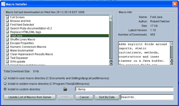
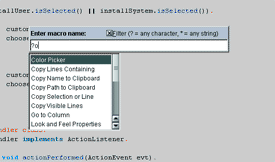

| Macro Manager Plugin |
By Carmine Lucarelli
based on code written by Slava Pestov and others |
Change Log
License Information
This plugin provides an interface within jEdit to the jEdit Community website's contributed macro archives.
 Invoke Macro Manager's Download macros action from the Plugins menu. This will bring up a list of all available macros. Use the tree list exactly as you would jEdit's Plugin Manager. The macro list is quite large, and is therefore cached to reduce the time spent downloading. To get the latest list, click the refresh button.
You can use the Sort button to toggle between listing macros alphabetically, by date added or by category. Note that toggling the sort will deselect any selected macros.
You can use the search field to restrict the listing to those macros whose descriptions or names contain, in any order, each search term.
Macros bundled into an archive format (gzip, zip, etc.) should be inflated automatically once downloaded. This is a new feature, so please report any bugs you might find.
 Invoke Macro Manager's Macro popup action from the Plugins menu. This will bring up a list of all available macros in a dialog. You can filter the list by typing characters into the search bar, and even filter using wildcard characters. Macros in the list can be invoked by double-clicking on them, or pressing the Enter key when the one you wish to run is highlighted.